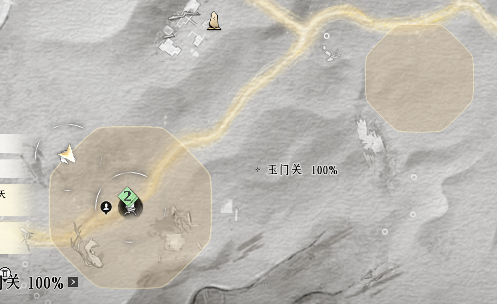
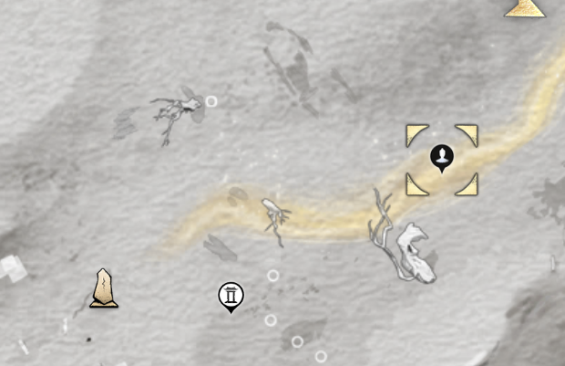
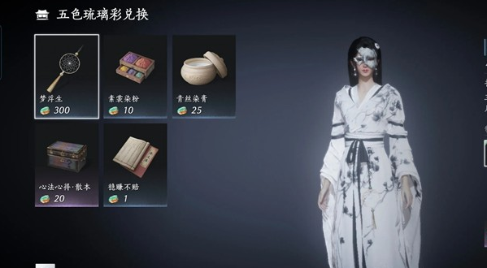

河西奇珍
河西五色琉璃彩
主要奖励：10个心法书页，需要200个五色琉璃彩兑换。
如何收集
需要在河西玉门关地图白天，出现特定天气的条件下，地图会如下图出现这样的大型区域提示，这时候就可以过去采集啦。

到达附近位置后会出现较大只，有残影的金瓯鸟。用远程武器比较容易打，它们会掉落小金堆，其中有掉落物品“五色琉璃彩”，每天获取上限99个。
如何兑换
到玉门关胡杨集传送点附近（见下图黑色NPC标点），找到树上的陈七七兑换。

可以兑换的物品如下图（心法箱子需要200个琉璃彩兑换完成）：
